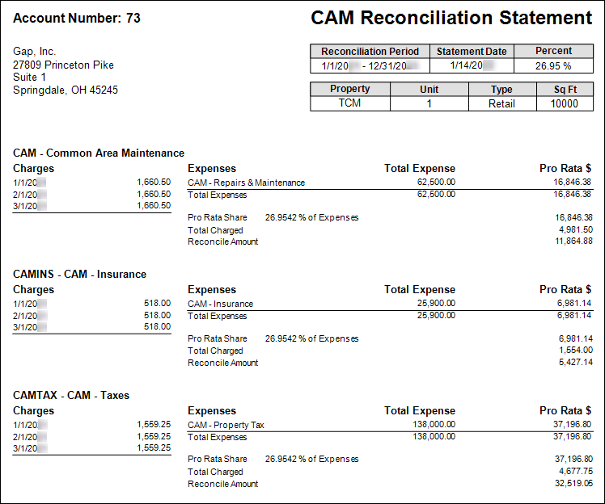
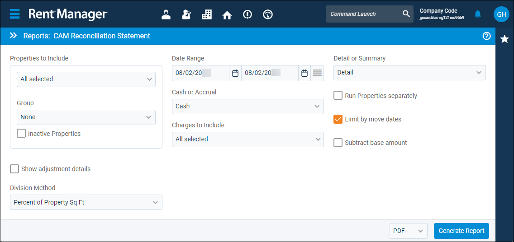
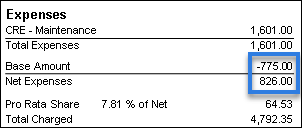
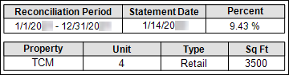
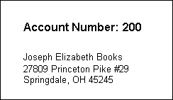
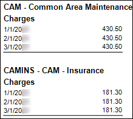
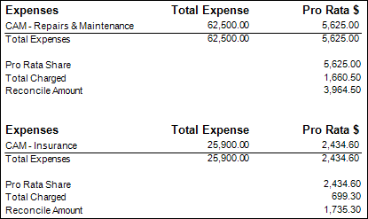
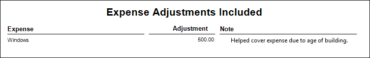

Source: https://rmxhelp.rentmanager.com/Topics/Express/Other/Reports/CAM-Reconciliation-Statement.htm
CAM Reconciliation Statement (Report)
The CAM Reconciliation Statement report displays a breakdown of the common area maintenance (CAM) activity for each commercial tenant based on the tenant's pro rata share of the specified property over a selected date range. The report examines commercial recoverable expense (CRE) charges posted to the tenant over the selected date range compared to the correlating CRE expenses that have been paid out by the property.
This analysis determines whether the commercial tenant needs to be charged more to cover their pro rata share or if they need to be credited for an overpayment. For your convenience, this report is designed to be sent to commercial tenants to explain the reconciliation and why there are additional charges or credits.
More Information
It is important to note that the CAM Reconciliation Statement should be generated using the same parameters used when performing the CAM reconciliation to calculate accurate information. For more information, refer to CAM Reconciliation.
Related Privileges
| Group | Privilege | Column |
|---|---|---|
| Letter/Email Templates/Reports/Packets | Run reports | Enabled |
Additionally, on the Reports tab, you must have access to CAM Reconciliation Statement.
For more information, refer to Control User Access.
To view the CAM Reconciliation Statement, do the following:
-
Go to
 arrow_forward Accounting arrow_forward Commercial arrow_forward CAM Reconciliation Statement.
arrow_forward Accounting arrow_forward Commercial arrow_forward CAM Reconciliation Statement.
The Reports: CAM Reconciliation Statement page displays. -
Adjust the report options as desired. Each option is described below.
-
Generate the report in your desired file format(s).

More Information
The CAM Reconciliation Statement can also be generated directly from the Tenants page by doing the following:
-
Go to
 arrow_forward Rental Info arrow_forward General arrow_forward Tenants.
arrow_forward Rental Info arrow_forward General arrow_forward Tenants.
The Tenants page displays. -
On the tenant for whom you would like to generate this report, click
 arrow_forward Run Reports.
arrow_forward Run Reports.
The Run Reports pop-up displays. -
In the Select a Report drop-down list, select CAM Reconciliation Statement.
-
Click Continue.
The Reports: CAM Reconciliation Statement page displays. -
To select multiple tenants, click Bulk Actions arrow_forward CAM Reconciliation Statement, check the box next to each tenant, then click Run Report.
The Reports: CAM Reconciliation Statement page displays.
If you generate the report this way, Properties to Include does not display in the report options because the desired tenants were already selected. Instead, the Run Tenants separately report option displays.
Report Options
The report options described below determine what data displays in the report.

Properties to Include
Select each property or a property Group to be included in the report.
More Information
This field populates only with the properties to which you have access. Your access to properties can be managed from your user account or on the property's details page. For more information, refer to Limit Access to a Property.
Optionally, check Show Inactive Properties to include properties that are no longer active.
More Information
Properties with the Property Type of RV/Campground or Short Term Rental do not display in this report. Short term rental property information is available in reports listed in the Short Term Rentals report category.
Date Range
Enter or select the date range to determine the data that displays in the report.
In the Date Range section, set the From and To dates for which the report should examine data.
These fields automatically populate with today’s date. Enter a different date or select a date from the calendar. Alternatively, adjust the dates using the available preset buttons or click  to open more options for setting a date range.
to open more options for setting a date range.
Cash or Accrual
This option determines whether the financial activity is calculated on a cash or accrual basis.
| Option | Description |
|---|---|
|
Accrual |
Includes all transactions for which income was earned and expenses were incurred, regardless of whether the payment was received or disbursed. |
|
Cash |
Includes only transactions for which payments are received or made. |
Charges to Include
Select the charge types used to reconcile against commercial recoverable expense accounts in the CAM reconciliation. Only charge types defined as a CRE Charge Type are listed in this option.
Detail or Summary
This option determines how much information is displayed in the report.
| Option | Description |
|---|---|
|
Detail |
Display subtotals for each CAM expense account, as well as the total expenses for all the expense accounts with activity within the selected dates. |
|
Summary |
Displays only the total for the CAM expense accounts with activity within the selected dates. |
Run Properties Separately
Check to generate a separate report for each selected property. Otherwise, all selected properties are combined into a single report.
Limit by Move Dates
This option impacts tenants who did not rent their unit for the entire date range of the statement and whether CRE transactions are displayed only for when they were renting the unit or for the entire selected report date range.
| Option | Description |
|---|---|
|
Checked |
The total includes only Commercial Recoverable Expense (CRE) transactions that were incurred on or between the tenant's Move In and Move Out dates for the unit's lease. |
|
Unchecked |
All CRE transactions during the selected date range of the statement are included in the report regardless of whether the tenant was officially renting the unit or not. |
Subtract Base Amount
This option reviews base amounts entered on the commercial leases' Charge Type Setup tab for charge types included in the reconciliation. For more information, refer to Add a Commercial Lease.
| Option | Description |
|---|---|
|
Checked |
The Base Amount is subtracted from the Total Expenses before calculating the commercial tenant’s portion of the adjusted expense.
 More Information If there are multiple chart accounts tied to one recoverable charge type, the Total Expenses value is calculated by adding all expense transactions associated with the selected property. Then, the tenant's Pro Rata Share for the charge type is applied to the expenses from oldest to newest. |
|
Unchecked |
The Base Amount does not affect the calculation of the tenant’s portion of the adjusted expense. |
Show Adjustment Details
Check to display each expense adjustment that was applied within the Date Range. When enabled, the Expense Adjustments Included section is included at the bottom of the report.
Division Method
This option determines how Rent Manager calculates the CRE distribution method in the report for each commercial tenant’s share. To ensure accurate results, select the same distribution method as used in your CAM reconciliation.
| Option | Description |
|---|---|
|
Percent of Property Sq Ft |
Charges CRE to commercial tenants based on the percentage of each tenant’s rented square footage of the overall property’s square footage. Rent Manager calculates the total square footage of all the units at the specified property, then divides the square footage of the unit occupied by the tenant to determine the pro rata share. For example, if the CRE charge is $3000 and a commercial tenant rents 50% of the total square footage of the property, that tenant is charged $1500 of the CRE charge amount. For this option to work, the tenant’s rental unit must have the Square Footage defined on unit's details page and the Total Sq Ft defined on property's details page. |
|
Equal Among Units |
Charges CRE by the total charge divided by the total number of units in the property. This means that part of the total CRE charge is not assigned if there are any vacant units in the property. For example, if your property has ten units and eight are rented, each of the eight tenants would be assigned 1/10 of the total CRE charge. |
|
UDF Field |
Charges CRE based on the percent value specified in selected tenant user defined fields (values may range from one to one hundred). For this option to work, you must create tenant-level user defined fields specifically for tracking percentages for each tenant who should receive a CRE charge. In the Tenant UDF field that becomes available when you select this division method, you may select one of these existing user defined fields from the drop-down list. |
|
CRE Setup |
Charges each commercial tenant the percentage of expenses you defined through the CRE Setup on commercial leases. For this option to work, you must have already defined percentages through the CRE Setup on commercial leases and have expenses in the selected CRE accounts for the selected date range. |
|
Pro rata share |
This is the percentage of the expenses for the selected CRE account defined through the CRE Setup on commercial leases. This option becomes available only when the CRE Setup option is selected. The formula is: Expense Account * ProRata%. For example, if an expense account has expenses of $500 and the percentage entered is 15, the pro rata share amount would be $75 (15% of $500, calculated as 500 * .15). When Pro rata share is checked, the Show expenses with 0% pro rata share option is made available to select. All applicable expenses with 0% pro rata share display in the Total Expense column of the report. |
|
Admin fees |
This is calculated by first determining the pro rata share for each commercial tenant and then multiplying that value by the administrative fee percentage defined through the CRE Setup on commercial leases. This option becomes available only when the CRE Setup option is selected. The formula is: Pro rata share * Administrative Fee%. For example, if the pro rata share is $75 and the administrative fee is 1%, the fee would be $0.75 (10% of $75, calculated as 75* .01). |
Report Results
The report results are described below including, if applicable, section, column, and subreport descriptions.
Report Header
Displays the report title, information on how the report results were filtered and information on the property and unit the commercial tenant is leasing.
More Information
If there are no commercial tenants with CAM activity for a property, the report header displays No tenants match selected settings.

Information in the top-right of the header is described in more detail in the table below.
| Column | Description | ||||||||
|---|---|---|---|---|---|---|---|---|---|
|
Reconciliation Period |
The report date range selected in the report options. |
||||||||
|
Statement Date |
The date the report was generated. |
||||||||
|
Percent |
|
||||||||
|
Property |
The Name of the property where the commercial tenant is currently leasing as entered on the property's details page. |
||||||||
|
Unit |
The Name of unit the commercial tenant is currently leasing as entered on the unit's s details page. |
||||||||
|
Type |
The unit type selected on unit's s details page for the unit the commercial tenant is currently leasing. |
||||||||
|
Sq Ft |
The square footage of the unit that the commercial tenant is leasing as entered on the unit's s details page. |
||||||||
|
Move Dates |
The Move In and, if applicable, Move Out dates of the tenant. This field displays only if all of the following conditions are met:
|
||||||||
|
Occupancy % |
The percentage of time the tenant occupied the unit during the CAM reconciliation date range. This field displays only if all of the following conditions are met:
|
More Information
If the property's name or address is incorrect or missing on the statement header, the information must be updated or added to the related fields on the property's details page. For more information, refer to Property Details (Page).
Tenant Information
Each tenant's system-generated account ID number and the tenant's default address in the top left.

CRE Charges
Charges with the Commercial Recoverable Expenses (CRE) Charge Type option checked that are assessed to the commercial tenant during the selected report date range and are selected in the Charges to Include section of the report options.
If the tenant has no activity within a charge type, it does not show on the report.

Tenant Expenses
The CRE expense accounts that are linked to the recovery charge type display on the right. At the bottom of each set of rows, the total property expenses and the commercial tenant expenses, including the Reconcile Amount, display.

The following columns display in this section:
| Row | Description |
|---|---|
|
Expenses |
The GL expense account reconciled against the CRE charge type listed in the CRE Charges section. |
|
Total Expense |
The total amount of charges, including adjustments, linked to the GL expense account for the entire property where the commercial tenant is currently leasing. |
|
Pro Rata $ |
The portion of the Total Expense the tenant owes, calculated using the following formula: Pro Rata $ = Total GL Expense Amount * Pro Rata Share % |
The following rows display beneath each Tenant Expenses section:
| Row | Description |
|---|---|
|
Pro Rata Share |
The amount of the commercial tenant's pro rata share for the set of expenses during the selected report date range. |
|
Total Charged |
The amount that each commercial tenant was charged with the recovery charge type displayed to the left during the selected report date range for the set of expenses. |
|
Reconcile Amount |
The difference between the commercial tenant's share of the expense and the total charged during the reconciliation period for each set of expenses. |
Expense Adjustments Included
Each expense adjustment that was applied to the tenant's lease within the Date Range is listed. The section displays only when Show adjustment details report option is enabled.

The following columns display:
| Column | Description |
|---|---|
|
Expense |
The name of the GL account associated with the adjustment. |
|
Adjustment |
The total amount of the adjustment. |
|
Note |
Additional details for tenants used to provide further context for this adjustment as entered on the Expense Adjustment Note pop-up in the Tenant Note field. |